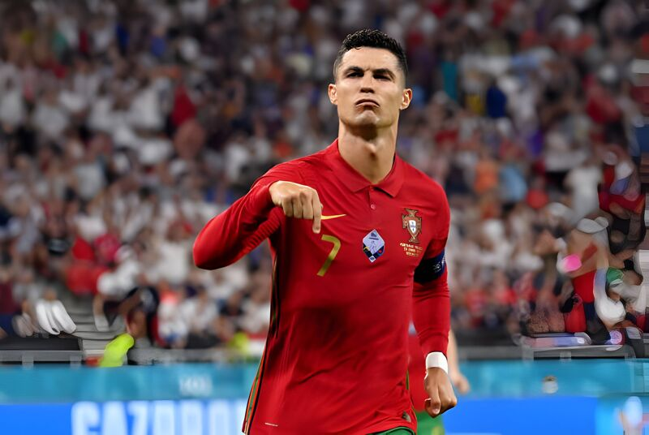
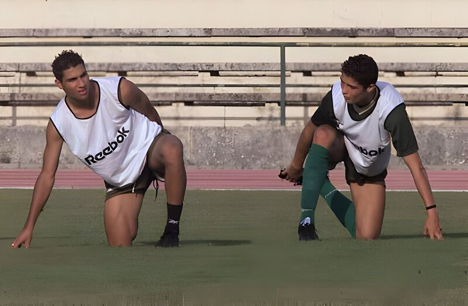
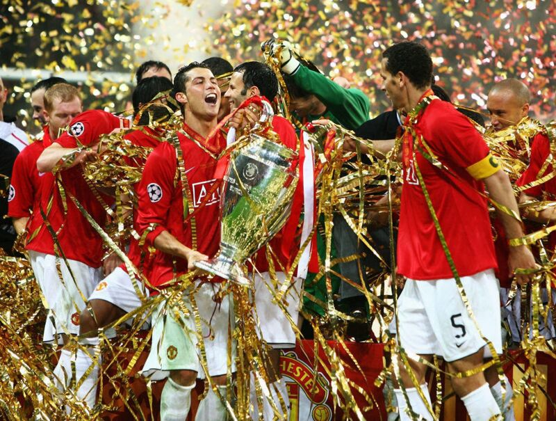
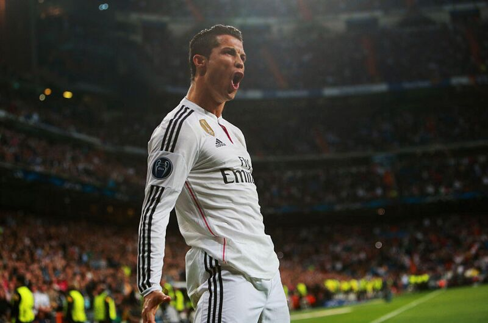
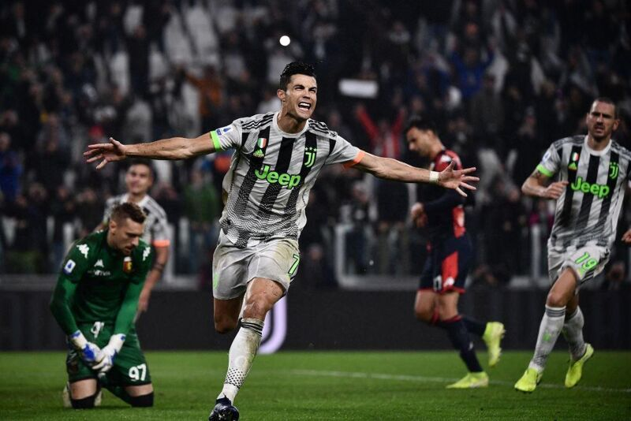
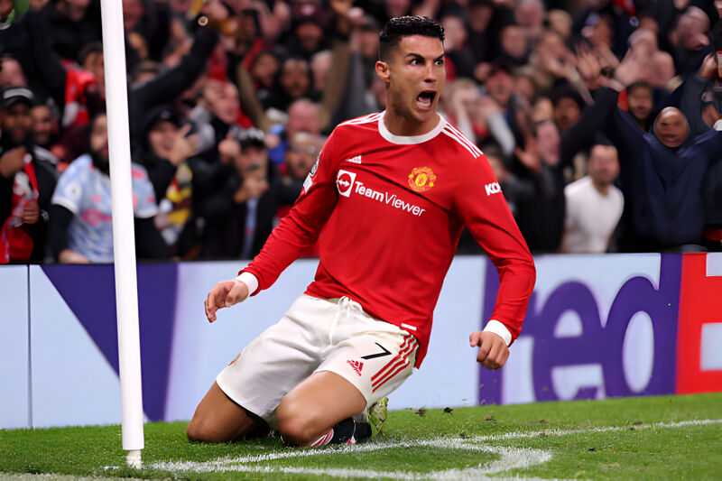
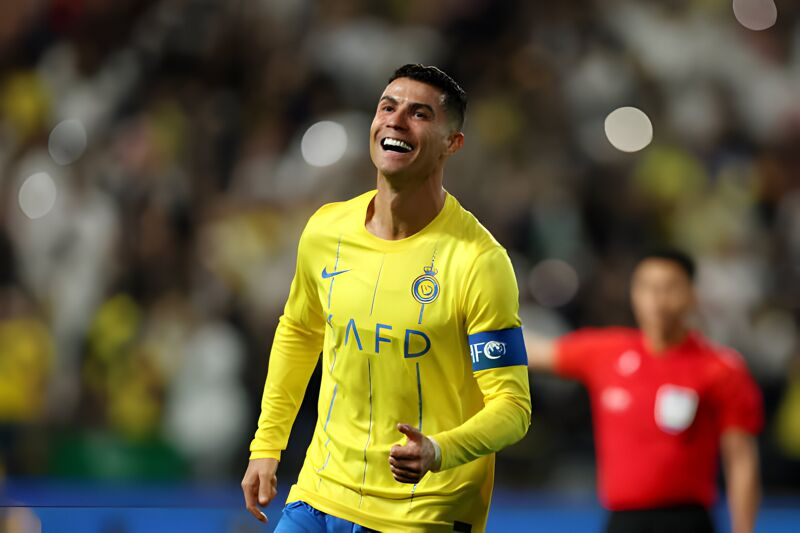

SENIOR CAREER TEAMS
Portugal National Team
Cristiano Ronaldo's career with the Portugal national team is distinguished by record-breaking achievements and inspirational leadership. Since his debut in 2003, Ronaldo has become Portugal's most capped player and all-time top scorer. His unparalleled skill, determination, and ability to perform in crucial moments have been pivotal in Portugal's success on the international stage. Highlighting his career, Ronaldo captained Portugal to its first major tournament victory at Euro 2016 and followed this with a UEFA Nations League title in 2019. His influence extends beyond goals, embodying the spirit and aspirations of Portuguese football, earning him admiration and respect worldwide. Ronaldo's legacy with Portugal is characterized by his remarkable contributions, making him a national hero and an enduring symbol of excellence in football.
Background image: Portugal v France - UEFA Euro 2020: Group F by Tibor Illyes - Pool at https://www.gettyimages.com/detail/news-photo/cristiano-ronaldo-of-portugal-celebrates-after-scoring-news-photo/1325105287?adppopup=true
Know more about Portugal National TeamSporting CP
Cristiano Ronaldo's career at Sporting CP was the springboard that launched one of the most illustrious careers in football history. Joining Sporting's academy at the age of 12, Ronaldo quickly established himself as a prodigious talent. His technical skills, dribbling ability, and goal-scoring prowess were evident from an early age, catching the eye of scouts and fans alike. Ronaldo made his debut for Sporting's first team in 2002, at just 17 years old. During his sole season with the senior squad, he made a significant impact, scoring 5 goals in 31 appearances across all competitions. His performances in the Primeira Liga and the UEFA Cup showcased his potential on a larger stage, culminating in a stunning performance against Manchester United in a pre-season friendly. This game proved to be pivotal, as it impressed Manchester United's players and manager Sir Alex Ferguson, leading to Ronaldo's transfer to the English club in 2003.
Background image: Cristiano Ronaldo Archive by VI-Images at https://www.gettyimages.com/detail/news-photo/ricardo-quaresma-cristiano-ronaldo-of-sporting-lisbon-news-photo/135783448?adppopup=true
Know more about Sporting CPManchester United
Cristiano Ronaldo's tenure at Manchester United, from 2003 to 2009, marked the meteoric rise of a footballing icon. Signed from Sporting CP, Ronaldo transformed from a promising teenager into one of the world's best under Sir Alex Ferguson. With a blend of blistering pace, supreme skill, and an unquenchable thirst for goals, he became a pivotal figure for United. Ronaldo's achievements at United include three Premier League titles, a UEFA Champions League trophy in 2008, and his first Ballon d'Or the same year. Scoring 118 goals in 292 appearances, his time at United was a blend of personal accolades and team success, setting the stage for his legendary career.
Background image: Manchester United v Chelsea - UEFA Champions League Final by Alex Livesey at https://www.gettyimages.com/detail/news-photo/cristiano-ronaldo-of-manchester-united-holds-the-trophy-news-photo/81191553?adppopup=true
Know more about Manchester UnitedReal Madrid
Cristiano Ronaldo's career at Real Madrid, spanning from 2009 to 2018, was nothing short of phenomenal, establishing him as one of football's all-time greats. His transfer set a world record fee at the time, signaling the start of a historic saga. Ronaldo shattered records, becoming Real Madrid's all-time top scorer with 450 goals in 438 appearances. His tenure included winning four Champions League titles, two La Liga titles, two Copa del Rey titles, and four Ballon d'Or awards. Ronaldo's unparalleled scoring ability, coupled with his leadership on and off the pitch, left an indelible mark on Real Madrid's history, embodying an era of dominance and spectacular success.
Background image: Real Madrid CF v FC Schalke 04 - UEFA Champions League by Alex Grimm at https://www.gettyimages.com/detail/news-photo/cristiano-ronaldo-of-real-madrid-cf-celebrates-as-he-scores-news-photo/465793002?adppopup=true
Know more about Real MadridJuventus
Cristiano Ronaldo's career at Juventus, from 2018 to 2021, showcased his enduring excellence and adaptability. Joining from Real Madrid, Ronaldo continued to defy age, maintaining his remarkable goal-scoring record in Italy. Over three seasons, he netted 101 goals in 134 appearances, becoming the fastest player in Juventus history to reach 100 goals. His tenure at Juventus was marked by winning two Serie A titles, a Coppa Italia, and a Supercoppa Italiana. Ronaldo was also crowned Serie A's top scorer in the 2020-2021 season. His impact extended beyond goals, influencing Juventus' global brand and inspiring teammates and fans with his professionalism and dedication.
Background image: FBL-ITA-SERIEA-JUVENTUS-GENOA by MARCO BERTORELLO at https://www.gettyimages.com/detail/news-photo/juventus-portuguese-forward-cristiano-ronaldo-celebrates-news-photo/1179075509?adppopup=true
Know more about JuventusManchester United
Cristiano Ronaldo's return to Manchester United in 2021, after a successful spell at Juventus, was met with great fanfare and expectations. Coming back to where he had previously flourished, Ronaldo immediately made an impact by scoring in his debut match. Despite his advanced age, he remained a prolific goal-scorer, leading the team's scoring charts and demonstrating his timeless quality and influence on the pitch. However, his second stint at United was also marked by the team's inconsistency and struggles in the Premier League and European competitions. Ronaldo's leadership and individual brilliance shone, even as Manchester United sought to rebuild and return to their former glory.
Background image: Manchester United v Atalanta: Group F - UEFA Champions League by Naomi Baker at https://www.gettyimages.com/detail/news-photo/cristiano-ronaldo-of-manchester-united-celebrates-after-news-photo/1347929380?adppopup=true
Know more about Manchester UnitedAl Nassr
Cristiano Ronaldo's move to Al Nassr, a Saudi Arabian club, in December 2022 marked a groundbreaking chapter in his illustrious career and in the world of football. Signing a contract reportedly making him one of the highest-paid athletes in the history of sport, Ronaldo's transition represented not just a personal career move but also a significant moment for global football dynamics. While specific achievements and impacts at Al Nassr are still unfolding, Ronaldo's presence is expected to elevate the profile of the Saudi Pro League, inspire local talent, and contribute to the sport's growth in the region. His enduring legacy of excellence, professionalism, and commitment is anticipated to influence Al Nassr and Saudi football positively.